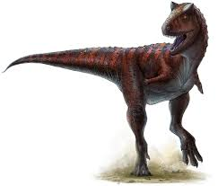
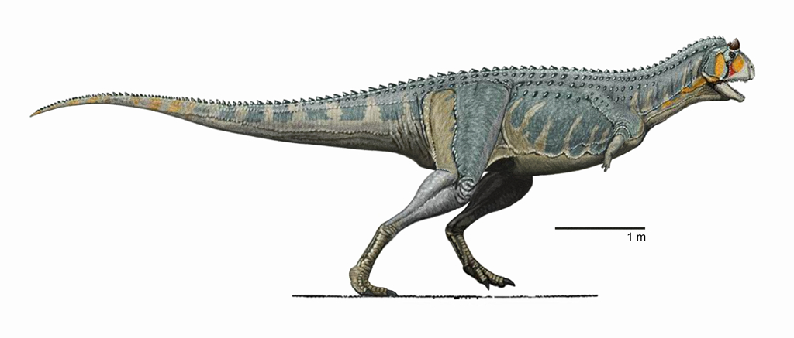
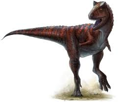
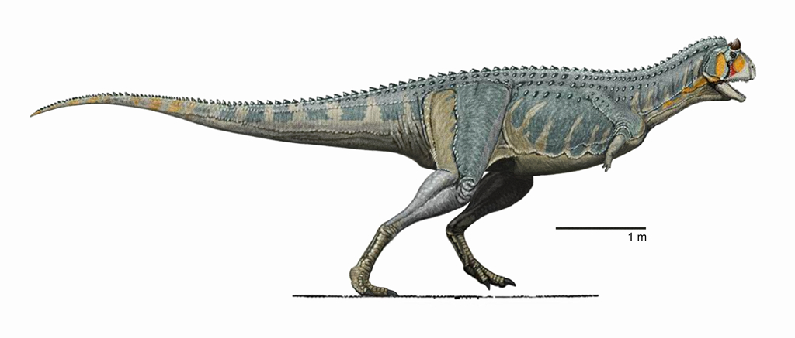

Le dinosaure Carnotaurus présente quelques caractéristiques communes avec dinosaures de l’hémisphère Nord, il possède entre autre les mêmes dents acérées, étroites et recourbées que les autre Théropodes carnivores. Les os de ses pattes antérieures sont courts comme ceux des tyrannosaures d’Amérique du Nord et d’Asie. Par contre ses cornes sont uniques en leur genre. Ces cornes osseuses, implantées à l’arrière du crâne, se dressent de chaque côté de la tête. Elles étaient sans doute recouvertes d’un étui corné, comme les cornes des taureaux et des moutons actuels. Ces cornes devaient servir à parader. Mais les squelettes de Carnotaurus étant rares, on ignore si ces cornes étaient l’apanage des mâles, ou si les femelles en portaient aussi.
Le museau de Carnotaurus est très étroit, mais le crâne s’élargit sous les cornes, les yeux étant légèrement de face. Carnotaurus possède ainsi une vision binoculaire, les champs de vision de l’oeil droit et de l’oeil gauche pouvant se croiser. Cette vision binoculaire dont jouissent l’être humain et certains animaux permet d’apprécier les distances. Grâce à elle, Carnotaurus était sans doute un excellent chasseur qui repérait ses proies de loin et fondait dessus sans leur laisser de chance.
 


